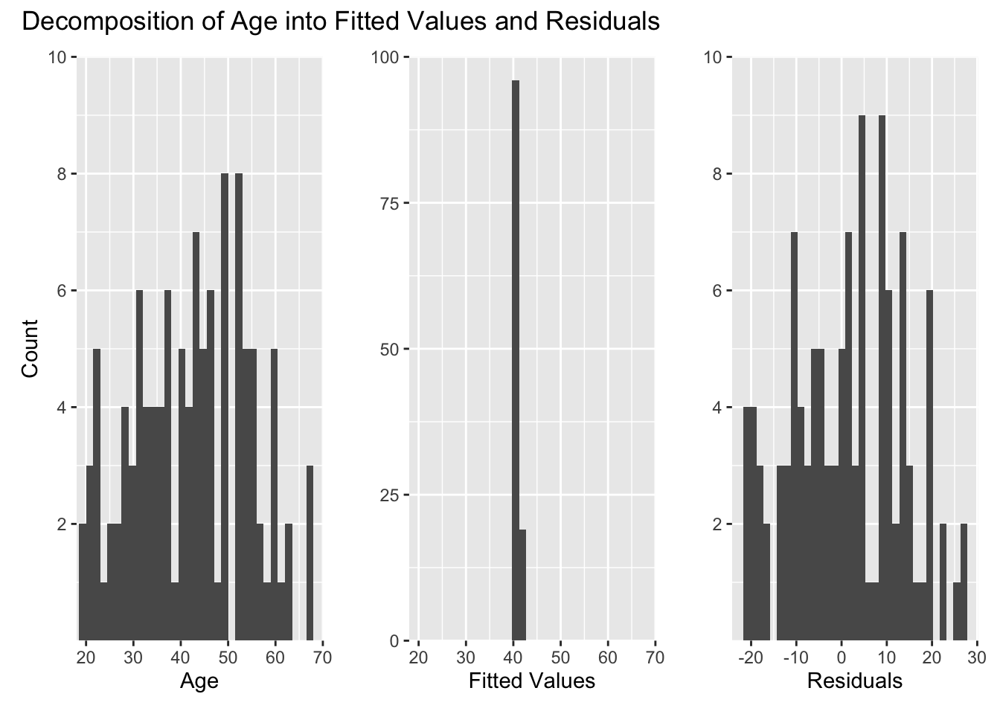

Chapter 8 Three Parameters
This chapter is still very much a draft. Come back in a few weeks for a better version.
Models have parameters. In Chapter 6 we created models with a single parameter \(p\), the proportion of red beads in an urn. In Chapter 7 , we used models with two parameters: \(\mu\) (the average height in the population, generically known as a model “intercept”) and \(\sigma\) (the variation in height in the population). Here — can you guess where this is going? — we will build models with three parameters: \(\sigma\) (which serves the same role throughout the book) and two intercepts: \(\beta_1\) and \(\beta_2\). All this notation is confusing, not least because different academic fields use inconsistent schemes. The key is to just follow the cardinal virtues and tackle your problem step by step.
8.1 EDA for trains
As always, it makes sense to start with some exploratory data analysis (EDA). To demonstrate modeling with three parameters, we will use the trains data set from the PPBDS.data package. Recall the discussion from Chapter 3. Enos (2014) randomly placed Spanish-speaking confederates on nine train platforms around Boston, Massachusetts. Exposure to Spanish-speakers – the treatment – influenced attitudes toward immigration. These reactions were measured through changes in answers to three survey questions. Let’s load the libraries we will need in this chapter, all of which we have used before, and look at the data.
## Rows: 115
## Columns: 8
## $ gender <chr> "Female", "Female", "Male", "Male", "Male", "Female", "Fema…
## $ liberal <lgl> FALSE, FALSE, TRUE, FALSE, TRUE, FALSE, FALSE, FALSE, FALSE…
## $ party <chr> "Democrat", "Republican", "Democrat", "Democrat", "Democrat…
## $ age <dbl> 31, 34, 63, 45, 55, 37, 53, 36, 54, 42, 33, 50, 24, 40, 53,…
## $ income <dbl> 135000, 105000, 135000, 300000, 135000, 87500, 87500, 13500…
## $ att_start <dbl> 11, 9, 3, 11, 8, 13, 13, 10, 12, 9, 10, 11, 13, 6, 8, 13, 7…
## $ treatment <fct> Treated, Treated, Treated, Treated, Control, Treated, Contr…
## $ att_end <dbl> 11, 10, 5, 11, 5, 13, 13, 11, 12, 10, 9, 9, 13, 7, 8, 13, 8…Here, we can see variables that indicate each respondent’s gender, political affiliations, age, and income. Additionally, we have variables that indicate whether a subject was in the control or treatment group, and their attitudes toward immigration both before (att_start) and after (att_end) the experiment. You can type ?trains to read the help page for more information about each variable. Let’s restrict attention to a subset of the variables.
It is always smart to look at a some random samples of the data:
## # A tibble: 5 x 4
## age att_end party treatment
## <dbl> <dbl> <chr> <fct>
## 1 44 9 Democrat Control
## 2 67 9 Democrat Control
## 3 42 10 Democrat Treated
## 4 52 10 Republican Treated
## 5 46 12 Democrat Controlatt_end is a measure of person’s attitude toward immigration, a higher number means more conservative, i.e., a more exclusionary stance on immigration into the United States. Running glimpse() is another way of exploring a data set.
## Rows: 115
## Columns: 4
## $ age <dbl> 31, 34, 63, 45, 55, 37, 53, 36, 54, 42, 33, 50, 24, 40, 53,…
## $ att_end <dbl> 11, 10, 5, 11, 5, 13, 13, 11, 12, 10, 9, 9, 13, 7, 8, 13, 8…
## $ party <chr> "Democrat", "Republican", "Democrat", "Democrat", "Democrat…
## $ treatment <fct> Treated, Treated, Treated, Treated, Control, Treated, Contr…Pay attention to the variable types. Do they make sense? Perhaps. But there are certainly grounds for suspicion. Why are age and att_end doubles rather than integers? All the values in the data appear to be integers, so there is no benefit is having these variables be doubles. Why is party a character variable and treatment a factor variable? It could be that these are intentional choices made by the creator of the tibble, i.e., us. These could be mistakes. Or, most likely, these choices are a mixture of sensible and arbitrary. Regardless, it is your responsibility to notice them. You can’t make a good model without looking closely at the data which you are using.
skim from the skimr package is the best way to get an overview of a tibble.
TABLE 8.1: Data summary
| Name | Piped data |
| Number of rows | 115 |
| Number of columns | 4 |
| _______________________ | |
| Column type frequency: | |
| character | 1 |
| factor | 1 |
| numeric | 2 |
| ________________________ | |
| Group variables | None |
Variable type: character
| skim_variable | n_missing | complete_rate | min | max | empty | n_unique | whitespace |
|---|---|---|---|---|---|---|---|
| party | 0 | 1 | 8 | 10 | 0 | 2 | 0 |
Variable type: factor
| skim_variable | n_missing | complete_rate | ordered | n_unique | top_counts |
|---|---|---|---|---|---|
| treatment | 0 | 1 | FALSE | 2 | Con: 64, Tre: 51 |
Variable type: numeric
| skim_variable | n_missing | complete_rate | mean | sd | p0 | p25 | p50 | p75 | p100 | hist |
|---|---|---|---|---|---|---|---|---|---|---|
| age | 0 | 1 | 42.4 | 12.2 | 20 | 33 | 43 | 52 | 68 | ▆▇▇▇▃ |
| att_end | 0 | 1 | 9.1 | 2.9 | 3 | 7 | 9 | 11 | 15 | ▂▃▇▃▃ |
skim() shows us what the different values of treatment are because it is a factor. Unfortunately, it does not do the same for character variables like party. The ranges for age and att_end seem reasonable. Recall that participants were asked three questions about immigration issues, each of which allowed for an answer indicated strength of agreement on a scale form 1 to 5, with higher values indicating more agreement with conservative viewpoints. att_end is the sum of the responses to the three questions, so the most liberal possible value is 3 and the most conservative is 15.
Always plot your data.
ch8 %>%
ggplot(aes(x = party, y = age)) +
geom_jitter(width = 0.1, height = 0) +
labs(title = "Age by Party Affiliation in Trains Dataset",
subtitle = "Where are the old Republicans?",
x = "Party",
y = "Age")
From this plot, we can gather that there are many more Democrats in this dataset than Republicans. Democrats also span a wider range of ages than Republicans. The mode age for Democrats appears to be 50.
ch8 %>%
ggplot(aes(x = treatment, y = att_end)) +
geom_boxplot() +
labs(title = "Attitude End by Treatment in Trains Dataset",
subtitle = "Did the treatment make people more conservative?",
x = "Treatment",
y = "Attitude After Experiment")On a boxplot, the top and bottom borders of the box denotes the 75th and 25th percentiles, respectively. The line inside the box denotes the mean of the data. Treated individuals have a higher mean att_end than the control group, and a higher distribution in general, with its 25th percentile lining up with the mean of the control group. The control group has one outlier, while the treatment group has none.
8.2 age as a function of party
We want to build a model and then use that model to draw conclusions about the world. What is the probability that, if a Democrat shows up at the train station, he will be over 50 years old? In a group of three Democrats and three Republicans, what age difference should we expect between the oldest Democrat and the youngest Republican? We can answer these and similar questions by creating a model that uses party affiliation to predict age
8.2.1 Wisdom
 FIGURE 8.1: Wisdom
FIGURE 8.1: Wisdom
In data science, there are two main aspects to Wisdom: representativeness and ethics. The data that we have are very limited. There are only 115 observations, all from 2012 and involving train commuters to Boston. How useful will this data be today, or for other populations around Boston, or for other cities in the US? Only your judgment, along with advice from your colleagues, can guide you.
The ethical issues are, fortunately, not fraught. Estimating someone’s age is (universally?) viewed as OK. Estimating someone’s health or income or criminal record are far dicier.
8.2.2 Justice
 FIGURE 8.2: Justice
FIGURE 8.2: Justice
Justice, in data science, consists of three topics: predictive versus causal modeling, the Preceptor Table and a mathematical formulation of the model.
Any model with age as its dependent variable will be predictive, not causal, for the simple reason that nothing, other than time, can change our age. You are X years old. It would not matter if you changed your party registration from Democrat to Republican or vice versa. Your age is your age.
In terms of the Preceptor Table, this fact means that there is only one potential outcome, i.e., one outcome. There is not a potential outcome if you are Democrat and a different potential outcome if you are a Republican.
When dealing with a non-causal model, the focus is on predicting things. The underlying mechanism which connects age with party is less important than the brute statistical fact that there is a connection. Predictive models care little about causality.
8.2.2.1 The mathematical model
We now know that we are working with a predictive model. Recall:
\[outcome = model + not\ in\ the\ model\]
In words, any event depends on our explicitly described model as well as on influences unknown to us. Everything that happens in the world is the result of various factors, and we can only ever consider a part of them in our model (because we do not know about some influences, or because we have no data about them).
So far we have only treated the equation above conceptually, but in fact it works just like any other equation. Let’s be a bit more concrete. Our model would formally look like this:
\[ \underbrace{y_i}_{outcome} = \underbrace{\beta_1 x_{r,i} + \beta_2 x_{d,i}}_{model} + \underbrace{\epsilon_i}_{not\ in\ the\ model}\]
where \[x_{r,i}, x_{d,i} \in \{0,1\}\] \[x_{r,i} + x_{d,i} = 1\] \[\epsilon_i \sim N(0, \sigma^2)\]
Don’t panic dear poets and philosophers, the whole thing is easier than it looks at first sight.
On the left-hand side we have the outcome, \(y_i\), which is the variable to be explained. In our case, this is the age in years of a person.
On the right-hand side we first have the part contained in the model, consisting of two similar looking terms. The two terms stand for Republicans and Democrats and work as follows. Each term consists of a parameter and a data point. The betas are our two parameters; \(\beta_1\) is the average age of Republicans in the population and \(\beta_2\) is the average age of Democrats in the population. The x’s are our explanatory variables and take the values 1 or 0. If someone is a Republican we have \(x_{r,i} = 1\) and \(x_{d,i} = 0\), if someone is a Democrat we have \(x_{r,i} = 0\) and \(x_{d,i} = 1\). In other words, the x’s are binary variables and are mutually exclusive (if you are a Democrat, you cannot also be a Republican).
The last part, \(\epsilon_i\) (“epsilon”), represents the unexplained part and is called the error term. It is simply the difference between the outcome and our model predictions. In our particular case, this includes all factors that have an influence on someone’s age but are not explained by party affiliation. We assume that this error follows a normal distribution with an expected value of 0, i.e., it is 0 on average.
The small i’s are an index to number observations in our data set. It is equivalent to the “ID” column in our Preceptor Table and simply states that the outcome for person i is explained by the modeled and non-modelled factors for person i. The betas are numbered with 1, 2, 3, etc. The corresponding x’s have an “r” or “d” subscript instead, for Republicans or Democrats.
8.2.3 Courage
 FIGURE 8.3: Courage
FIGURE 8.3: Courage
Courage allows us to translate model to code.
8.2.3.1 The fitted model
To get posterior distributions for our three parameters, we will again use the stan_glm() function from Chapter 7. If we take a look at the formula, we can see that it is similar to the equation from before.
The variable before the tilde,
age, is our outcome.The only explanatory variable is
party. This variable has only two values, ‘Democrat’ and ‘Republican’.We have also added
- 1at the end of the equation, indicating that we do not want an intercept, which is otherwise added by default. Running this code in R, we get the following output:
## stan_glm
## family: gaussian [identity]
## formula: age ~ party - 1
## observations: 115
## predictors: 2
## ------
## Median MAD_SD
## partyDemocrat 42.6 1.2
## partyRepublican 41.1 2.8
##
## Auxiliary parameter(s):
## Median MAD_SD
## sigma 12.3 0.8
##
## ------
## * For help interpreting the printed output see ?print.stanreg
## * For info on the priors used see ?prior_summary.stanreg“partyDemocrat” corresponds to \(\beta_1\), the average age of Democrats in the population. “partyRepublican” corresponds to \(\beta_2\), the average age of Republicans in the population. Since we don’t really care about the posterior distribution for \(\sigma\), we won’t discuss it here. Graphically:
fit_obj %>%
as_tibble() %>%
select(-sigma) %>%
pivot_longer(cols = partyDemocrat:partyRepublican,
names_to = "parameter",
values_to = "age") %>%
ggplot(aes(x = age, color = parameter)) +
geom_density() +
labs(title = "Posterior Probability Distribution",
subtitle = "Average age for Boston commuters in 2012",
x = "Age",
y = "Probability") +
theme_classic()
The unknown parameters \(\beta_1\) (partyDemocrat) and \(\beta_2\) (partyRepublican) are still unknown. We can never know the true average age of all Democrats in the population. But we can calculate a posterior probability distribution for the parameters. Comments:
Democrats seem slightly older than Republicans. That was true in our sample and so, almost (but not quite!) by definition, it will be true in our the posterior probability distributions.
Our estimate for the average age of Democrats in the population is much more precise than that for Republicans because we have five times as many Democrats as Republicans in our sample. A central lesson from Chapter ?? is that, the more data you have related to a parameter, the narrower your posterior distribution will be.
There is a great deal of overlap between the two distributions. Would we be surprised if, in truth, the average age of Republicans in the population was greater than that for Democrats? Not really. We don’t have enough data to be sure either way.
The phrase “in the population” is doing a great deal of work because we have not what, precisely, we mean by the population. Is it the set of people on those commuter platforms on those days in 2012 when the experiment was done? Is it the set of people on all platforms, including ones never visited? Is it the set of all Boston commuter? All Massachusetts residents? All US residents? Does it include people today, or can we only draw inferences for 2012? We will explore these questions in every model we create.
| 8 Observations from Trains Dataset | |||
|---|---|---|---|
| Age | Party | Fitted | Residual |
| 31 | Democrat | 42.61 | -11.6 |
| 34 | Republican | 41.13 | -7.1 |
| 63 | Democrat | 42.61 | 20.4 |
| 45 | Democrat | 42.61 | 2.4 |
| 55 | Democrat | 42.61 | 12.4 |
| 37 | Democrat | 42.61 | -5.6 |
| 53 | Republican | 41.13 | 11.9 |
| 36 | Democrat | 42.61 | -6.6 |
The fitted values are the same for all Republicans and for all Democrats, as the fitted value is one of the two estimates output by our model. However, almost all of the residuals are different due to each observation’s own variation from the fitted value estimate. This table shows how just a sample of 8 individuals captures a wide range of residuals, making it difficult to predict the age of a new individual who walks in the room even using our model.
We can get a better picture of the unmodeled variation in our sample if we plot these three values for all individuals in our data set. The following three histograms show the actual outcomes, fitted values and residuals of all people in trains:

The three plots are structured like our equation and table above, i.e. a value in the left plot is the addition of one value in the middle and one in the right plot. The actual age distribution looks like a normal distribution, centered around 43 and with a standard deviation of about 12 years. The plot for the fitted values shows only two adjacent spikes, which represent the estimates for Democrats and Republicans. Since the residuals represent the difference between the two plots, their distribution looks like the first plot.
8.2.4 Temperance
 FIGURE 8.4: Temperance
FIGURE 8.4: Temperance
Recall the first questions with which we began this section:
- What is the probability that, if a Democrat shows up at the train station, he will be over 50 years old?
So far we have only tried our model on people from our data set whose real age we already knew. This is helpful to understand the model, but our ultimate goal is to understand more about the real world, about people we don’t yet know much about. Temperance guides us to make meaningful predictions and to become aware of their known and unknown limitations.
8.2.4.1 Making Predictions
We learned in Chapter 7 that, when running stan_glm, an algorithm creates thousands of simulations, each of which contains a draw from the posterior distribution of each parameter. .
What sounds complicated is actually just a matter of a few extra lines of code. To start with a simple question, what are the chances that a random Democrat is over 50 years old? First, we create a tibble with the desired input for our model. In our case the tibble has a column named “party” which contains a single observation named “Democrat”. This is a bit different than before, when we only specified the input to be 0 or 1. Next, we’ll use the posterior_predict() function to get some simulation results. posterior_predict() takes two arguments: the model for which the simulations should be run, and a tibble indicating for which and how many parameters we want to run these simulations. In this case, the model is the one from ‘Courage’ and the tibble is the one we just created.
# Creating a tibble with a column named "party" and a single observation,
# "Democrat". We will use this to tell posterior_predict() that we want
# simulation results for a single Democrat.
new <- tibble(party = "Democrat")
# Generating simulation results. The first argument specifies the fitted model
# to be used, which in our case is the one we generated in "Courage". The second
# argument specifies the input.
pp <- posterior_predict(fit_obj, newdata = new)
head(pp, 10)## 1
## [1,] 17
## [2,] 38
## [3,] 38
## [4,] 14
## [5,] 49
## [6,] 61
## [7,] 36
## [8,] 29
## [9,] 64
## [10,] 51A look at the first few observations shows that we simply get ten draws from the model’s posterior distribution of the age of a Democrat. It is important to understand that this is not a concrete person from the trains dataset - the algorithm in posterior_predict() simply uses the existing data from trains to estimate this posterior distribution.
Note that we have a new posterior distribution under consideration here. The unknown parameter, call it \(D_{age}\) is the age of a Democrat. This could be the age of a randomly selected Democrat from the population or of the next Democrat we meet or of the next Democrat we interview on the train platform. The definition of “population” determines the appropriate interpretation. Yet, regardless, \(D_{age}\) is an unknown parameter, not one, like \(\beta_1\), \(\beta_2\), or \(\sigma\) that we have already estimated. That is why we need posterior_predict().
tibble(age = pp[, 1]) %>%
ggplot(aes(x = age)) +
geom_density() +
labs(title = "Posterior Probability Distribution for a Democrat's Age",
x = "Age",
y = "Probability") +
theme_linedraw()
Once we have the posterior distribution, we can answer (almost) any reasonable question. In this case, the probability that the next Democrat will be over 50 is around 28%.
tibble(age = pp[, 1]) %>%
mutate(ot_50 = ifelse(age > 50, TRUE, FALSE)) %>%
summarize(perc = sum(ot_50)/n())## # A tibble: 1 x 1
## perc
## <dbl>
## 1 0.266Recall the second question:
- In a group of three Democrats and three Republicans, what age difference should we expect between the oldest Democrat and the youngest Republican?
As before we start by creating a tibble with the desired input. Note that the name of the column (“party”) and the observations (“Democrat”, “Republican”) must always be exactly as they the data set. This tibble as well as our model can then be used as arguments for posterior_predict():
new <- tibble(party = c("Democrat", "Democrat", "Democrat",
"Republican", "Republican","Republican"))
pp <- posterior_predict(fit_obj, newdata = new)
head(pp, 10)## 1 2 3 4 5 6
## [1,] 45 50 53 57 23 58
## [2,] 43 50 57 34 34 40
## [3,] 48 42 28 34 31 39
## [4,] 40 35 35 37 18 59
## [5,] 72 41 37 70 36 23
## [6,] 53 55 55 19 34 24
## [7,] 39 31 57 31 60 47
## [8,] 50 38 72 50 23 78
## [9,] 72 28 40 40 66 17
## [10,] 37 45 40 53 52 40A look at the output shows that we now have 6 columns: one for each person. R does not name the columns, but they are arranged in the same order in which we specified the persons in the tibble (D, D, R, R, R). Notice that all values in a row belong to the same scenario, i.e. each row represents a scenario where the 6 people meet.
To determine the expected age difference, we can then proceed as follows:
as_tibble(pp) %>%
set_names(c("dem_1", "dem_2", "dem_3",
"rep_1", "rep_2", "rep_3")) %>%
rowwise() %>%
# Creating three new columns. The first two are the
# highest age among Democrats and the lowest age
# among Republicans, respectively. The third one is
# the difference between the first two.
mutate(dems_oldest = max(c(dem_1, dem_2, dem_3)),
reps_youngest = min(c(rep_1, rep_2, rep_3)),
age_diff = dems_oldest - reps_youngest) %>%
# Ungroup to tell R not to perform rowwise operations
# anymore.
ungroup() %>%
# Create posterior probability distribution
ggplot(aes(x = age_diff)) +
geom_density() +
labs(title = "Posterior Probability Distribution",
subtitle = "Age difference between the oldest/youngest of three Democrats/Republicans",
x = "Age",
y = "Probability")
In words, we would expect the oldest Democrat to be about 22 years older than the youngest Republican, but we would not be surprised if the oldest Democrat were actually younger than the youngest Republican.
8.3 att_end as a function of treatment
Above, we created a predictive model: with someone’s party affiliation, we can make a better guess as to what their age is. There was nothing causal about that model. Changing someone’s party registration can not change their age. In this example, we build a causal model. What is the effect of exposing someone on a train platform to Spanish-speakers on their attitudes toward immigration?
8.3.1 Wisdom
FIGURE 8.5: Wisdom
8.3.2 Justice
FIGURE 8.6: Justice
8.3.3 Courage
FIGURE 8.7: Courage
## stan_glm
## family: gaussian [identity]
## formula: att_end ~ treatment - 1
## observations: 115
## predictors: 2
## ------
## Median MAD_SD
## treatmentTreated 10.0 0.4
## treatmentControl 8.4 0.4
##
## Auxiliary parameter(s):
## Median MAD_SD
## sigma 2.8 0.2
##
## ------
## * For help interpreting the printed output see ?print.stanreg
## * For info on the priors used see ?prior_summary.stanregNote that for both Democrats and Republicans, the prediction interval is significantly wider than the confidence interval. This discrepancy illustrates the unmodeled variation of the dataset: while the mean values, as indicated by the “fit” column, are still the best guess you can make for any given subject, we are less confident in the value range of that individual subject than we are of the value range of the mean. The unmodeled variation widens the prediction intervals relative to the confidence intervals.
Recall our discussion regarding the wider confidence intervals for Republican subjects than Democrat subjects. Although the Republican and Democrat average incomes had vastly different confidence intervals — the Republican confidence intervals were much wider — they have very similar prediction intervals. Although the parameter uncertainty of these two parameters were very different, the unmodeled variation for both parameters was roughly the same. Even though the data points were equally spread out for both Democrat and Republican income, were were able to more confidently pinpoint a true value for democrat income because we had more data to work with.
In many cases, the most important use of a model is for prediction. We use them to make predictions about data which we have not yet seen.
And we can reconstruct the table by filling in the unknowns with the predictions (note that these are unchanged) and their associated levels of uncertainty (which HAVE changed to accommodate for individual variation within the data):
| Ending Attitudes on Immigration of 7 Random Respondents | ||
|---|---|---|
| Subject | $$Y_c(u)$$ | $$Y_t(u)$$ |
| 7 | 8.45 (2.9-14.0) | 11 |
| 6,041 | 8.45 (2.9-14.0) | 10 |
| 67 | 8.45 (2.9-14.0) | 5 |
| 40,080 | 8.45 (2.9-14.0) | 11 |
| 758 | 5 | 10 (4.4-15.6) |
| 32 | 8.45 (2.9-14.0) | 13 |
| 8,809 | 13 | 10 (4.4-15.6) |
8.3.4 Temperance
FIGURE 8.8: Temperance
There are various sources of uncertainties and problems that have addressed in previous chapters and again in this chapter. It’s important that you always have these in the back of your mind when working with data:
Validity. At the surface level, parameter names might not invoke too much thought — but once you really sit down and think about the story the numbers are trying to tell, it’s not always the case that the numbers deserve to tell that story. In our earlier discussion regarding
incomeandatt_end, the conclusions we draw from these data might be misleading just because the way they were collected or computed inevitably change these conclusions. Even when there’s nothing WRONG with a setup, we need to keep in mind that the smallest differencesWhen we dive deeper into the data, we run into the issue of parameter uncertainty, which is the uncertainty associated with our analysis of summary parameters, such as mean, median, and range. In our above analysis with the
trainsdataset, we account for parameter uncertainty using confidence intervals.As great as confidence intervals are, they don’t capture the uncertainty of using summary statistics to predict parameter values of random individuals. We are more sure, for example, about the range of possible incomes for the mean income of American democrats than we are about the range of possible incomes for a single American democrat, whose income could stray far from the mean democrat income. This unmodeled variation, or variation between data points that is not fully captured by bootstrapping, deserves much consideration when dealing with data.
Unknown unknowns are an especially unavoidable source of uncertainty. The world is changing, and people 50 years from now might act differently and have vastly different lifestyles and characteristics; in the case of the
trainsdataset, it wouldn’t be unreasonable to expect completely different combinations of income and party affiliation. That would render our mean income, median ratio, and prediction intervals for both those measures useless.
The fitted value of att_end is 8.45 for the control group and 10 for the treated group. Because a higher att_end means more conservative towards stances on immigration, it seems that treated individuals had more conservative stances on this issue than the control group by the end of the study.
8.3.5 Model Structure
Our predictive model helped us make guesses as to what an individual’s age is. However, that’s just about all we can do with this relationship. Recall that the trains dataset was originally introduced in the context of the Rubin Causal Model back in Chapter 3. That model cannot be applied to the relationship between party and income because these values were independently decided outside the experiment — although we were able to identify correlations between those two variables, the combinations of party and income were predetermined and not randomly assigned in a way that allows us to establish a causal relationship. If an individual suddenly decided to change party affiliations, we wouldn’t suddenly expect his or her income to spike or plummet.
In conclusion, while we can explore correlations or trends between party and income, we cannot label these correlations or trends as causal. However, treatment was a variable that was randomly assigned to subjects, and we have a variable that was measured after this random assignment, att_end. With this setup, we can calculate the Average Treatment Effect, or the average difference in att_end for treated subjects and control subjects.
Now, let’s make a Preceptor Table for this data:
| Preceptor Table of att_end ~ treatment | ||
|---|---|---|
| ID | treatment | att_end |
1 |
treated |
11 |
2 |
? |
? |
... |
... |
... |
75 |
control |
5 |
... |
... |
... |
564 |
control |
13 |
565 |
? |
? |
... |
... |
... |
10,627 |
treated |
11 |
... |
... |
... |
N |
? |
? |
Preceptor Tables aim to capture all of the data such that if the question marks were filled out, one wouldn’t need to construct a model. The rows in this Preceptor Table represent the N commuters on which our model is extrapolating, with N being the population of commuters using Boston public transportation. However, we’re going to need a different kind of table if we want to display the causal effect of being treated – more with this soon.
Next, the second part of model structure, the formula.
\[ y_i = b_1 x_t + b_2 x_c\] Once again, we start here. We can make our parameters constants, \(\hat{b_1}\) and \(\hat{b_1}\), by assigning them to the estimates of the model. Plugging in these numbers outputs an estimated att_end for the observation, or our fitted value \(\hat{y_i}\).
\[ \hat{y_i} = \hat{b_1} x_t + \hat{b_2} x_c \] \[ \hat{y_i} = 8.45x_t + 10x_c \] When the individual is treated (\(x_t\)=1 and \(x_c\)=0), their fitted value is 8.45. When the individual is a control (\(x_t\)=0 and \(x_c\)=1), their fiited value is 42.6.
Subtract the recorded att_end by fitted value for the epsilon value… \[\epsilon_i = y_i - \hat{y_i}\] …And you can now complete your equation. \[ y_i = \hat{b_1}x_r + \hat{b_2} x_d + \epsilon_i \] Note that the math for both the predictive model we worked on earlier and this model is identical. It is not the calculations for the residual, fitted value, or parameter estimates that differ between these two model types; rather, it is how one uses and interprets these numbers. While predictive models are simply used for predicting another variable’s value (in the previous case, age), we can use these numbers to calculate the effect of one variable (treatment) on another (att_end) for each individual observation.
Now, we’ll create a Rubin Causal Model table of possible outcomes, as we did back in ch3. We’ll do this using 7 random observations from the trains dataset.
#Adding question marks where necessary
trains_RCM <- trains %>%
pivot_wider(names_from = treatment, values_from = att_end) %>%
slice(1:7) %>%
mutate(subject = 1:7) %>%
replace_na(list(Treated = "?", Control = "?")) %>%
select(subject, Control, Treated)
trains_RCM$subject <- c("7", "6,041", "67", "40,080", "758", "32", "8,809")
#Mathematical notation
trains_RCM %>%
gt() %>%
cols_label(subject = md("**Subject**"),
Control = md("**$$Y_c(u)$$**"),
Treated = md("**$$Y_t(u)$$**")) %>%
tab_style(cell_borders(sides = "right"),
location = cells_body(columns = vars(subject))) %>%
cols_align(align = "center", columns = TRUE) %>%
tab_header(title = "Ending Attitudes on Immigration of 7 Random Respondents")| Ending Attitudes on Immigration of 7 Random Respondents | ||
|---|---|---|
| Subject | $$Y_c(u)$$ | $$Y_t(u)$$ |
| 7 | ? | 11 |
| 6,041 | ? | 10 |
| 67 | ? | 5 |
| 40,080 | ? | 11 |
| 758 | 5 | ? |
| 32 | ? | 13 |
| 8,809 | 13 | ? |
Recall that the Rubin Causal Model centers on filling in the unknowns, which are indicated by the “?”s in the table. There’s one way we could fill in the missing values — we could use our approximations we generated with our lm() model: that is, for each unknown Treated value, we use 10, and for each unknown Control value, we use 8.45.
| Ending Attitudes on Immigration of 7 Random Respondents | ||
|---|---|---|
| Subject | $$Y_c(u)$$ | $$Y_t(u)$$ |
| 7 | 8.45 | 11 |
| 6,041 | 8.45 | 10 |
| 67 | 8.45 | 5 |
| 40,080 | 8.45 | 11 |
| 758 | 5 | 10 |
| 32 | 8.45 | 13 |
| 8,809 | 13 | 10 |
This table looks a bit funky: take a look at subject 67. According to this model, subject 67’s attitude under control would be HIGHER than his/her attitude under treatment, which corresponds to a negative treatment effect. This would mean that he/she would become more LIBERAL after undergoing treatment, which flies in the face of the ATE we calculated earlier. Another example of this can be seen with subject 32, whose predicted att_end under treatment is lower than his/her att_end under control (also signifying a shift towards liberal attitudes regarding immigration).
Clearly, using the same control and treatment values to fill in the unknowns doesn’t capture the entire picture as it does with a predictive model. While using lm() to fill in the att_end unknowns towards the center of the distribution, it makes less sense for values towards the outskirts of the dataset. So, how can we predict outcomes in a way that equally addresses data towards the center of the distribution, and data that isn’t?
One such way is by attaching the ATE, which we previously calculated to be -1.55, in the appropriate direction to fill in the unknowns:
## # A tibble: 2 x 4
## term estimate conf.low conf.high
## <chr> <dbl> <dbl> <dbl>
## 1 (Intercept) 8.45 7.77 9.14
## 2 treatmentTreated 1.55 0.514 2.58| Ending Attitudes on Immigration of 7 Random Respondents | ||
|---|---|---|
| Subject | $$Y_c(u)$$ | $$Y_t(u)$$ |
| 7 | 9.45 | 11 |
| 6,041 | 8.45 | 10 |
| 67 | 3.45 | 5 |
| 40,080 | 9.45 | 11 |
| 758 | 5 | 6.55 |
| 32 | 11.45 | 13 |
| 8,809 | 13 | 14.55 |
The usage of this table shows how a causal model is used differently than a predictive model. Unlike before, it wasn’t enough to fill in our unknowns with the parameter estimates. This is because we aren’t merely predicting their att_end, a variable that, unlike age, could be changed by exposure to a treatment variable. By using the ATE, we were able to make a more informed prediction on any individual’s att_end had they been placed in the other group.
8.3.6 Parameter Uncertainty
Here, we see that the average treatment effect is -1.55; this is the average change in att_end caused by treatment (if this statistic looks unfamiliar, refer back to chapter 3 for a refresher on ATE). But how confident are we in this ATE? We can use lm() again to generate confidence intervals for our parameters and for this value:
#This is necessary so we can see the offset as caused by treatmentTreated, not treatmentControl.
trains$treatment <-fct_relevel(trains$treatment, "Control", "Treated")
lm(data = trains, att_end ~ treatment - 1) %>%
tidy(conf.int = TRUE) %>%
select(term, estimate, conf.low, conf.high)## # A tibble: 2 x 4
## term estimate conf.low conf.high
## <chr> <dbl> <dbl> <dbl>
## 1 treatmentControl 8.45 7.77 9.14
## 2 treatmentTreated 10. 9.23 10.8##
## Call:
## lm(formula = att_end ~ treatment - 1, data = trains)
##
## Residuals:
## Min 1Q Median 3Q Max
## -6.00 -2.00 0.00 2.00 6.55
##
## Coefficients:
## Estimate Std. Error t value Pr(>|t|)
## treatmentControl 8.453 0.347 24.4 <2e-16 ***
## treatmentTreated 10.000 0.389 25.7 <2e-16 ***
## ---
## Signif. codes: 0 '***' 0.001 '**' 0.01 '*' 0.05 '.' 0.1 ' ' 1
##
## Residual standard error: 2.8 on 113 degrees of freedom
## Multiple R-squared: 0.917, Adjusted R-squared: 0.916
## F-statistic: 627 on 2 and 113 DF, p-value: <2e-16Our measure of confidence for the ATE is known as the residual standard error, which in this case is 2.78. The residual standard error show our confidence in the average treatment effect of the trains dataset being representative of the true average treatment effect on Boston commuters.
8.3.7 Uncertainties
Page built: 2020-10-13